Generates and plots a cost curve for a binary classification model over a range of thresholds, illustrating the total cost associated with different classification thresholds based on specified costs for false positives, false negatives, true positives, and true negatives.
Arguments
- dx_obj
A `dx` object containing threshold-based statistics including false positives (fp) and false negatives (fn) for each threshold.
- cfp
Cost of a false positive.
- cfn
Cost of a false negative.
- ctp
Benefit (negative cost) of a true positive. Default is 0.
- ctn
Benefit (negative cost) of a true negative. Default is 0.
Value
A ggplot object representing the cost curve, displaying total cost on the y-axis and classification threshold on the x-axis.
Details
The cost curve represents the total cost associated with a binary classification model as the classification threshold is varied. It is calculated as: $$Total Cost = CFP * FP + CFN * FN - CTP * TP - CTN * TN$$ where FP, FN, TP, and TN are the counts of false positives, false negatives, true positives, and true negatives at each threshold, respectively.
The curve helps in identifying the optimal threshold that minimizes total cost or maximizes overall benefit, considering the specific cost/benefit structure of different outcomes in a particular application.
Typically, the total cost will vary depending on the threshold, reflecting the trade-off between reducing one type of error and increasing another. By adjusting the threshold, users can determine the point at which the model provides the best balance according to the specified cost matrix.
Examples
dx_obj <- dx(
data = dx_heart_failure,
true_varname = "truth",
pred_varname = "predicted",
outcome_label = "Heart Attack",
setthreshold = .3
)
dx_plot_cost(dx_obj, cfp = 1000, cfn = 8000)
